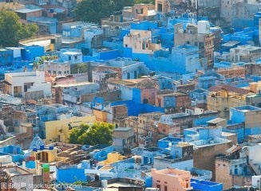
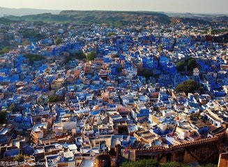
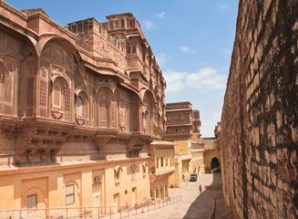
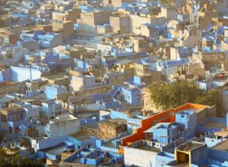
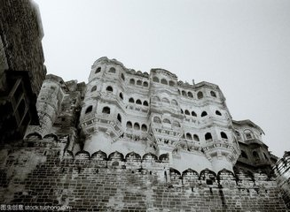
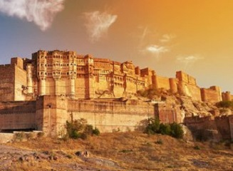
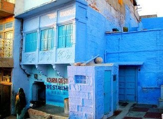
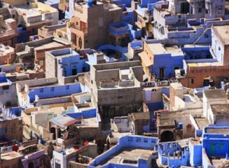

morly旅游网
焦特布尔位于塔尔大沙漠的边缘。她是拉贾斯坦邦的第二大城市。这座城市中最主要的建筑是一座极其宏伟的城堡 --梅和拉加(Meherangarh)。它伫立于市中心的一座陡峭山峰的顶端，从这里眺望，你可以清楚地看见旧城区和新城区的交汇处。从旧城区的这些蓝色建筑上远望，是拉贾斯坦最壮观的景色之一。至于平地上，在旧城区宛如一团乱麻似的道路上闲逛也是一件很有意思的事情。整个旧城区由一道10公里长的城墙环绕，这道城墙的建筑时期较之城市本身约晚一个世纪，进出需要经过八道门。在这些迷宫一样的街道里漫步，令人如痴如醉，流连忘返。拉起普特人的首领拉索勒斯在1459年建立了焦特布尔城。他的子孙不仅统治着整个焦特布尔，还有其他拉起普特的土地。拉索勒斯的王国曾一度被称为"麻沃"- 死亡之地。焦特布尔一年一度的麻沃节都会以歌舞的形式来纪念拉贾斯坦邦历史上的英雄。由Sam Neill和John Cleese主演的电影 rudyard kipling's Jungle Book的部分摄制工作就是在这里完成的。有一种名叫jodhpurs的紧身有袋马裤也是由此而得名的。
 蓝色，是大多数人喜欢的颜色，它代表了纯净与沉稳的特性，给大家介绍的这座城市是蓝色，那就是印度的蓝城-焦特布尔！
这是印度拉贾斯坦邦西部的城市，位于塔尔大沙漠的边缘，因此也是一座沙漠中的艳丽之城，在这里每一座房子不论大小，都被刷成了不同的蓝色，浅蓝、天蓝、靛蓝、深蓝等等。那深深浅浅的蓝色让人心醉，因为蓝色，大沙漠吹来的热风，也让狭窄的街巷显得不是那么燥热！
 济州岛
世界上有着许多蓝色的小镇和城市，它们或许有着不一样的气质，但是印度的蓝城却正是因为她的平凡，以及接地气而出名。蓝色在印度是属于高种姓婆罗门的颜色，在这里居住的人都要将房子涂成蓝色，渐渐地，蓝色也成为了这座城市的主色调！
 韩国饮食：
焦特布尔，是印度除了泰姬陵之外必到的去处，梅兰加尔堡的魅力也绝不会亚于泰姬陵，在这座城市的最高处有一座城堡-梅和拉加，这也是焦特布尔的中心！
站在城堡上你可以俯瞰整座蓝城，密密麻麻的被粉刷成蓝色的房子，是拉贾斯坦邦最壮观的景色之一。当劲烈的风吹过古堡，山脊隔断着历史和现实，有一种君临天下的豪迈，蓝城也被评为印度最有魅力的城市！另一种说法是，靛蓝色的涂料可以防蚊虫，当游客行走在那一抹靛蓝中，或是发现街边一个有意思的小店，又或者是抬头望见漏过蓝色房屋的阳光，心情也会跟着明快的愉悦起来。此刻，你会忘记这里是印度，会浸染在蓝色妖姬的万种风情里，也许这就是蓝色之城的魅力！ 看似朴实无华却又不平淡，印度蓝城是你喜欢的样子吗！
 内容整理至网络，如有侵权，请联系我们！1255394075@qq.com